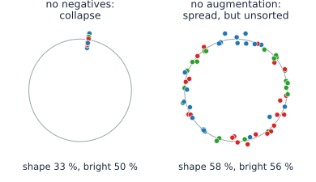
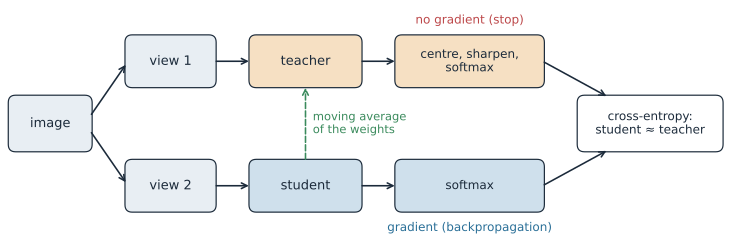
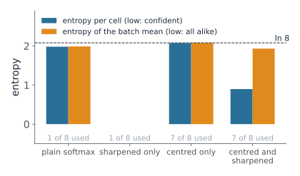
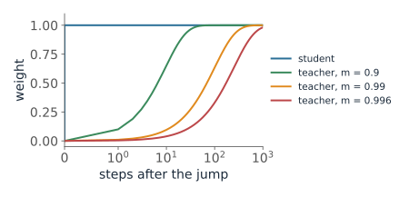
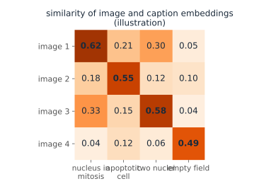

Contrastive learning needs negatives: big batches, and other cells of the same kind pushed away. Can a network learn from two views without them, and what do the large pretrained models built this way give a microscopist?
Self-distillation: a student matches a teacher whose weights are a moving average of the student’s.
Why it does not collapse: centring and sharpening of the teacher’s output, and the slow teacher.
Foundation models: very large networks pretrained like this; why their features transfer to microscopy, and when not. Image–text models in one slide.
Using frozen features: nearest neighbours, clustering of phenotypes, linear probes; and batch effects.
Slides titled The math give the formulas and proofs; the ideas are complete without them.
Contrastive learning (last unit) pushes every other image away:
it needs many negatives per step (big batches, or a queue);
most negatives of a common phenotype are false negatives: cells of the same kind pushed apart;
but without them, “pull the two views together” collapses to a constant.
Self-distillation keeps the pull, drops the push, and avoids collapse by making the two sides unequal.

Student and teacher

Both networks output scores over K “prototypes” (a few thousand in practice), turned into probabilities. The student must match the teacher’s probabilities on the other view.
Only the student is trained by backpropagation; the teacher follows it slowly. Afterwards the teacher is usually the better network, and it is kept.
Why it does not collapse
Two ways to collapse: every image the same prototype, or every prototype equally likely (uniform). Two opposite fixes on the teacher’s output:
Centring: subtract a running mean of the teacher’s scores: no prototype can win for every image. Alone it drifts to uniform.
Sharpening: a low temperature (0.04): each image confidently picks a prototype. Alone it drifts to one prototype for all.
Together: confident per image, different between images. The coding exercise’s batch: entropy per cell 0.90, of the batch mean 1.93 (ln 8 = 2.08), 7 of 8 prototypes in use.

The math: the self-distillation loss
Teacher scores \mathbf g_t(x_1) \in \mathbb R^K on view x_1, student scores \mathbf g_s(x_2) on view x_2, centre \mathbf c, temperatures \tau_t < \tau_s:
\partial\mathcal L/\partial\mathbf g_s = (P_s - P_t)/\tau_s: the student is pulled towards the teacher’s distribution; P_t is a constant (stop-gradient).
\mathcal L = H(P_t) + \mathrm{KL}(P_t \,\|\, P_s). Collapse to one prototype makes H(P_t) = 0; the centring term keeps the batch-average of P_t spread out. Why the dynamics avoid collapse is understood only in part; it is an empirical recipe.
The moving-average teacher
The teacher’s weights move a fraction 1 - m towards the student’s at every step.
m = 0.99: after a sudden change of the student, the teacher has followed 1 % after one step, 10 % after 10, 63 % after 100 steps.
m = 0.996 (typical): 33 % after 100 steps, 98 % after 1000.
The teacher is an average of recent students: smoother, more stable, and a better feature extractor than any single one; the student chases a slowly moving target.
With m = 0 (teacher = student) training becomes unstable and tends to collapse.

Views: global and local crops
Global crops: two large crops (half of the image or more), seen by the teacher and the student.
Local crops: several small crops (a few percent of the image), seen only by the student, which must predict the teacher’s output for the whole image from a small piece.
This “local-to-global” task forces the features to describe what a part says about the whole: for a cell, the nucleus texture tells the cell-cycle phase.
The augmentations still decide what is ignored (the contrastive unit’s table applies unchanged).
Modern recipes add a masked-modelling term (pretext unit) to the same student and teacher.
Self-distillation as pseudocode
teacher = copy of student; centre = 0
repeat for every batch:
for each image: global views g1, g2 and some local views
t = softmax((teacher(g) − centre) / tau_t) for g in g1, g2 # no gradient
s = softmax(student(v) / tau_s) for every view v
loss = mean over pairs (teacher view, other student view) of −Σ t · ln s
update the student by backpropagation
teacher weights = m · teacher weights + (1 − m) · student weights
centre = 0.9 · centre + 0.1 · mean of the teacher scores of this batch
keep the teacher (without its last layer) as the feature extractor
Foundation models
Self-distillation and masked modelling scale: networks with hundreds of millions to billions of weights, trained on hundreds of millions of unlabelled images, mostly photographs.
Their frozen features work surprisingly well on microscopy: edges, textures, blobs, repetitive patterns and part–whole relations are generic.
They work less well where microscopy differs: many channels (a model for three-colour photographs sees one stain at a time), scale (a 1000 × 1000 field with 5-pixel nuclei is not a photograph), texture as signal (photographs teach that texture is surface, not chromatin state).
Hence microscopy foundation models: the same recipes, trained on millions of microscopy images (cell painting screens, tissue sections, electron micrographs).
Before trusting one: test it on your images with a probe and a few labels, against a classical baseline.
Image–text models in one slide
Two encoders, one for images and one for captions, trained contrastively on millions of (image, caption) pairs: an image’s embedding must be closest to its own caption’s.
Afterwards, zero-shot classification: embed the class names as text (“a nucleus in mitosis”, “an apoptotic cell”) and pick the closest to the image.
Search by text, and labels without training data; but only for concepts the captions described, and with the biases of the captions.
For microscopy: useful for retrieval in large image collections; quantitative phenotyping needs a probe trained on your labels.

Using frozen features
Run the pretrained network on your crops, keep the embeddings, train nothing (or very little):
k nearest neighbours: a new cell gets the majority label of the k most similar labelled cells. No training at all.
Clustering (k-means, the k-means unit) and a 2D map of the embeddings: groups of similar cells, candidate phenotypes, found without labels; then look at the cells in each cluster.
Linear probe: logistic regression on the embeddings with a few labels (attention unit).
The features describe everything that differs between images and survived the augmentations: also the plate, the day, the microscope, the stain batch.
Check: colour the 2D map or the clusters by plate or day. If the cells sort by plate, the clusters are batch effects, not phenotypes.
Simple correction: centre (and scale) the embeddings per plate, using control wells: the same trick as the teacher’s centring, here against technical drift.
Evaluate with plates held out (leakage unit): a probe trained and tested on cells from the same plates learns the plate.
The math: k-NN, the probe, per-plate centring
Embeddings \mathbf z_i \in \mathbb R^d, labels y_i for a few cells.
k-NN: \hat y(\mathbf z) is the majority label among the k nearest \mathbf z_i (cosine or Euclidean). Leave-one-out accuracy: classify each labelled cell by the others.
Linear probe: P(y = c \mid \mathbf z) = \mathrm{softmax}(W\mathbf z + \mathbf b)_c, W and \mathbf b by minimising the cross-entropy: (d + 1)C parameters, so a few dozen labels per class suffice for d in the hundreds (with weight decay).
Per-plate centring: \tilde{\mathbf z}_i = \mathbf z_i - \boldsymbol\mu_{p(i)} with \boldsymbol\mu_p the mean embedding of plate p’s control cells. It removes any additive plate offset; scaling by the plate’s standard deviation removes a multiplicative one.
Summary
Idea
In one line
Self-distillation
a student matches a teacher on another view; no negatives
The teacher
a moving average of the student’s weights; no gradient; kept at the end
Collapse
centring stops one prototype from winning, sharpening stops uniform outputs
Foundation models
huge networks pretrained this way; generic features that often transfer to microscopy
Image–text
contrastive between images and captions: zero-shot labels and search
Frozen features
k-NN, clustering, linear probes; check for batch effects, centre per plate
Next: the same “no clean target” idea for denoising.